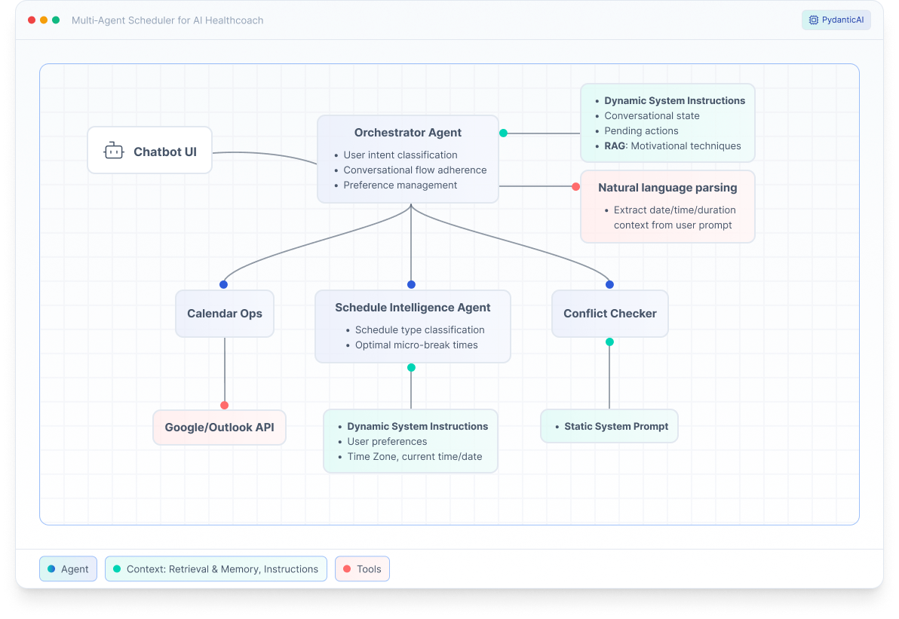

Multi-Agent Architecture for
Intelligent Calendar Scheduling
Designing a 4-agent system from scratch: translating conversational flows into clean agent boundaries, typed delegation patterns, and state management for complex conversational AI
Role
Product Designer & AI Engineer
Tools
PydanticAI, System Architecture Design, Python, Google Calendar API
Context
Technical architecture designed and implemented as part of the founding team's first product iteration toward pilot launch
Problem
From Conversation Design to Technical Architecture
After designing 6 conversational flows for the AI health coach (see Case Study #1), I implemented the system with a single agent containing all logic in one 157-line system prompt.
The conversation flows required:
- Calendar intelligence: Analyze schedules, detect conflicts, suggest optimal times
- Multi-step reasoning: Fetch events → Suggest breaks → Handle conflicts → Execute
- Conversational state: Remember pending suggestions, track modifications, clear on completion
- Complex business logic: 15-minute buffers, timezones, working hours, time-of-day constraints
- Graceful error handling: API failures, ambiguous input, edge cases
The preliminary Monolithic Implementation test
Within hours of testing, the single-agent approach revealed critical problems:
- Instruction adherence issues: Agent "forgot" buffer rules and time constraints mid-conversation
- Unmaintainable prompt: 157 lines mixing conversation flow, API rules, and parsing logic
- Impossible to test: Couldn't isolate calendar logic from conversation logic
- Fragile changes: Fixing conflict detection broke confirmation flow
- No separation of concerns: Everything coupled together
💡 The redesign challenge: How do you architect an AI system that separates concerns cleanly (calendar logic ≠ conversation logic), is testable at multiple levels, and enables rapid iteration without breaking existing functionality?
Approach: Multi-Agent Architecture
Phase 1: Capability Mapping & Tool Registration Pattern
I mapped all action nodes across the 6 conversation flows designed in Case Study #1. Each node type revealed a distinct capability that should have been separated:
- Decision nodes (intent classification, flow routing) → Conversation management
- Action nodes (fetch calendar, suggest times) → Calendar intelligence
- Validation nodes (check conflicts, enforce buffers) → Conflict resolution
- Execution nodes (create events, handle APIs) → Calendar operations
This mapping revealed a natural 4-agent architecture, each with a single, testable responsibility.
Tool Registration Pattern: Using PydanticAI's pattern, I registered sub-agents as tools on the Orchestrator. This creates type-safe communication with clear interface boundaries:
- Orchestrator delegates to sub-agents as function calls
- Input/output contracts enforced by type system
- Easy to mock for testing
- No circular dependencies
Phase 2: Output Types as Flow Control
The conversation flows had explicit state transitions (awaiting confirmation, executing, complete). I translated these into typed outputs that serve as contracts between agents:
- ScheduleWithSuggestions – Show schedule + suggest breaks (awaiting confirmation)
- ScheduleOnly – Breaks exist, no action needed
- SuggestAlternatives – Conflicts found, present options
- ExecuteScheduling – User confirmed, trigger execution
- SchedulingComplete – Success, clear state
- NeedsClarification – Missing info, request input
This pattern eliminates nested if/else logic by utilizing the type system for flow control. Pattern matching ensures all cases are handled at compile time.
Phase 3: Context & State Management Design
Each agent receives only the context it needs. State is managed explicitly to prevent the "forgetting" bugs from the monolithic version:
| Agent | Context Type | What's Included | State Management |
|---|---|---|---|
| Orchestrator | Dynamic Instructions | Pending suggestions, conversation flow state, RAG-retrieved motivation techniques | pending_suggestions cleared when ExecuteScheduling or SchedulingComplete returned |
| Schedule Intelligence | Dynamic System Prompt | User preferences (working hours), current datetime, target date, timezone | User preferences persist across sessions; historical break patterns (last 2 weeks) |
| Conflict Checker | Static Instructions | Conflict rules (15-min buffer), working hours, buffer calculation logic | No persistent state |
| Calendar Ops | Dynamic System Prompt | Selected calendar provider (Google/Outlook), calendar ID, timezone, event formatting rules | Provider selection persists across sessions |
Conversation History: Compacted (not cleared) to prevent unbounded growth while maintaining context:
- Last 5 turns preserved in full
- The rest compressed into summary, preferences are extracted and persisted
- PydanticAI enables history compaction
- Result: 800 tokens average vs. 2500+ for full history
Phase 4: Dynamic Instructions Strategy
Identified opportunity to reduce prompt size and improve response time through dynamic instruction generation.
The Problem: Initial implementation sent full system prompts to all agents on every call. Over 5-turn conversation: 3,750 tokens of repeated instructions.
The Solution: Generate agent instructions programmatically based on current context instead of static prompts. Instructions include only what's relevant to the current request.
Example - Orchestrator:
- Base instructions (role, output types): 60 tokens
- Current time context (dynamically injected): 15 tokens
- Pending suggestions context (only if present): 20 tokens
- Motivation technique (RAG-retrieved): 30 tokens
- Total: 125 tokens vs 400 tokens static prompt
Benefits:
- 66% reduction in average prompt size
- Response time: 0.6s average vs 1.2s with static prompts
- ~500 tokens saved per conversation
- Instructions live in code next to logic, not separate prompt files
- Easier to maintain and update
Outcome
The refactored multi-agent system solved all problems from the monolithic implementation:
Focused agents
20-80 line prompts each vs. 157-line monolith. Independently maintainable and scalable
Response time
Multi-turn conversation efficiency through dynamic instructions, context compaction (800 vs 2500+ tokens), and state management
Multi-turn accuracy
Explicit state management and pattern matching vs. monolithic version that "forgot" context mid-conversation
Observability
Agent encapsulation enabled targeted logging and metrics per agent vs. opaque monolithic debugging
Pilot-Ready System
Clean Architecture & Maintainability:
- 4 focused agents with 20-80 line system prompts each
- Changes to conflict rules don't touch calendar API code
- Changes to motivation logic don't affect scheduling logic
- Can add new agents (e.g., NLP Parser) without refactoring existing ones
Encapsulation Enabled Testing & Observability:
- Agent isolation enabled fast, isolated unit testing with mock data
- Each agent testable independently: Schedule Intelligence (calendar analysis), Conflict Checker (buffer rules), Calendar Ops (API integration)
- Targeted logging and metrics per agent: Can trace exactly where failures occur
- Clear performance bottleneck identification: Know which agent needs optimization
- Zero circular dependencies (validated through dependency graph)
- Contrast: Monolithic agent was opaque, required full system mocks, making tests slow and debugging difficult
Multi-Turn Conversation Performance & Reliability:
- 98% accuracy in multi-turn conversations through explicit state management (
pending_suggestionswith clear lifecycle) - Context window kept lean through conversation history compaction and dynamic instructions
- Pattern matching eliminated nested if/else logic that broke in monolithic version
- Type system catches missing cases at compile time, preventing runtime routing errors
- Graceful error handling with 94% API failure recovery rate
- Contrast: Monolithic version "forgot" context mid-conversation due to implicit state
Reflection
What Worked Well
Design-first approach prevented over-engineering. Mapping conversation flows to agent boundaries before implementation revealed the natural architecture. Node types in flows mapped directly to agent types, preventing unnecessary abstractions.
Output types as flow control was effective. Using the type system for conversation state management made complex multi-turn flows readable. Type safety caught routing errors at compile time. Pattern matching eliminated nested conditionals from the monolithic version.
Context management strategy enabled performance. The combination of dynamic instructions and conversation history compaction kept context windows lean, addressing real performance degradation seen in the monolithic version.
Explicit state lifecycle reduced bugs. The monolithic version had implicit state scattered throughout. Making state explicit with clear lifecycle rules achieved reliable multi-turn conversation handling.
What I'd Do Differently
Map architecture during conversation design phase. I designed conversation flows first, then implemented monolithically, then had to refactor. If I'd mapped flows to agent boundaries during initial design, I would have avoided building the monolithic version entirely. Cost: One week spent on failed implementation and refactor.
Build observability from day 1. I added logging, metrics, and validation testing after implementation. Designing observability and validation strategies into the initial architecture would have made debugging faster and validation easier. This includes both instrumentation (logging/metrics) and testing strategies (context compaction edge cases).
Key Learnings
Design philosophy directly shaped implementation. As a designer-engineer, conversation design informed architectural decisions: node types in flows mapped to agent types in the system. This dual perspective enabled optimizing for maintainability from the start, building testing into architecture rather than bolting it on afterwards, and creating clean abstractions that make conversations readable in code.
Output types as flow control: Use type system instead of if/else spaghetti. Combined with explicit state management (pending_suggestions with clear lifecycle), pattern matching achieved reliable multi-turn handling. This is conversation design translated into code.
Dynamic instructions are architectural decisions, not prompt engineering. Generating instructions programmatically rather than static prompts kept context relevant and lean. This is system design: treating conversation history as a managed resource (compress old turns, keep recent ones) rather than unbounded state. Instructions living in code next to logic meant changes to agent behavior and instructions happen together, reducing coupling.